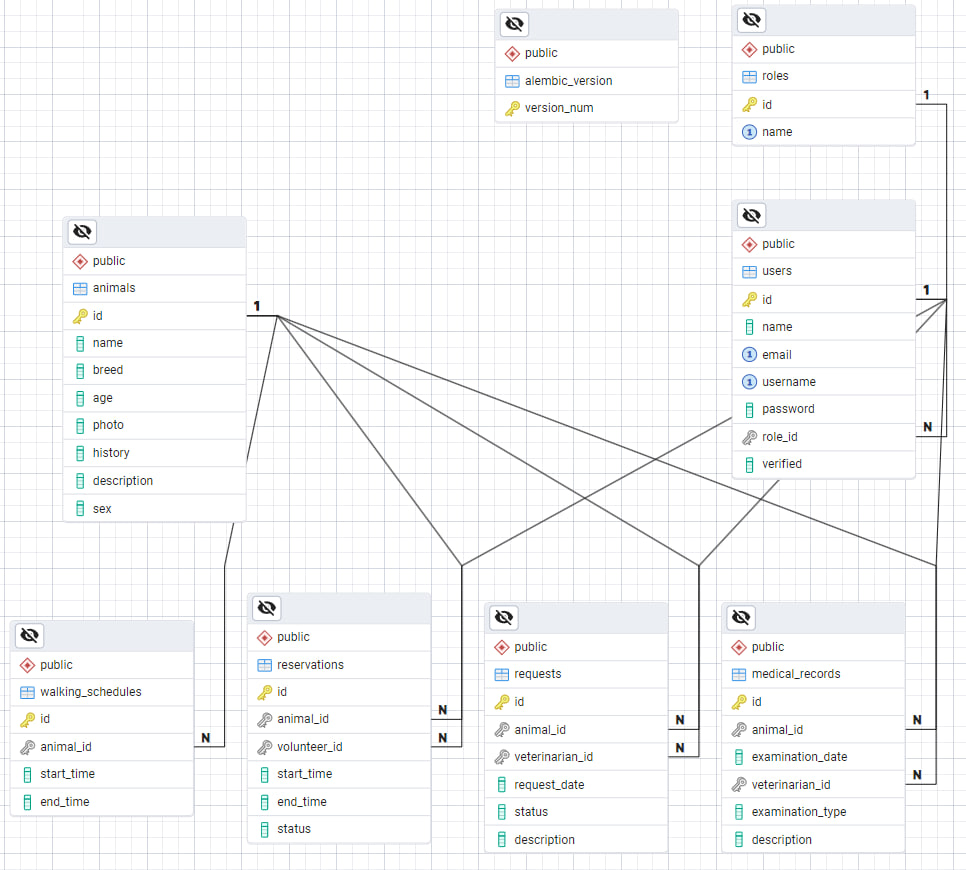

Zvířecí útulek
- Autoři
- Andrii Klymenko
xklyme00@stud.fit.vut.cz -
fronted developer
- Matúš Janek
xjanek05@stud.fit.vutbr.cz -
fronted and backend developer
- Richard Húska
xhuska03@stud.fit.vutbr.cz -
backend developer
- URL aplikace
- https://iis-vet-clinic-1.onrender.com/
Uživatelé systému pro testování
| Login | Heslo | Role |
|---|
| admin | admin | Administrátor |
| pecovatel | pecovatel | Pečovatel |
| veterinar | veterinar | Veterinář |
| dobrovolnik | dobrovolnik | Dobrovolník |
Video
https://www.youtube.com/watch?v=CIIDqtHEKEw.
Implementace
- administrátor:
- spravuje uživatele: vytváří pečovatele a veterináře pomoci endpoint definovaných v zdrojových souborech CreateCaretaker.py a CreateVeterinarian.py.
- upravuje údaje uživatele na zakladě jeho identifikátoru: endpoint UpdateUser.py.
- maže uživatele na zakladě jeho identifikátoru: endpoint DeleteUser.py.
- pečovatel:
- spravuje zvířata: CreateAnimal.py, UpdateAnimal.py, DeleteAnimal.py.
- vytváří rozvrhy pro venčení: CreateWalkingSchedule.py.
- ověřuje dobrovolníky: VerifyVolunteer.py.
- schvaluje rezervace zvířat na venčení, eviduje zapůjčení a vrácení: ChangeReservationStatus.py.
- veterinář:
- vyřizuje požadavky od pečovatele: ScheduleRequest.py.
- spravuje zdravotní záznamy zvířat: CreateMedicalRecord.py, UpdateMedicalRecord.py.
- dobrovolník:
- rezervuje zvířata na venčení: CreateReservation.py.
- vidí historii svých venčení: GetReservationsByVolunteerId.py.
- neregistrovaný uživatel:
- prochází informace o útulku a zvířatech: FilterAnimals.py, GetAnimalInfoById.py.
Databáze

Instalace
Postup instalace na server
Jak hosting byl použit VPS server od Render.com, na něm byly nasazeny 3 služby: backend, frontend a databáze.
- 1. Nastavit systémovou proměnnou
DATABASE_URL, ve které bude připojovací string do databáze.
- 2. V souboru
/frontend/src/api/api.ts nastavit axiosBaseUrl na příslušnou adresu hostovaného backendu.
- 3. Pro backend je připravený
Dockerfile (/backend/Dockerfile), který lze použít pro vytvoření image a nasazení na server.
- 4. Pro frontend je připravený
Dockerfile (/frontend/Dockerfile), který lze použít pro vytvoření image a nasazení na server.
- 5. Inicializace tabulek a vytvoření schématu databáze proběhne automaticky při prvním spuštění backendu. Vytvoří se také administrátorský účet a uživatelské role.
Softwarové požadavky
Všechny backendové požadavky jsou uvedeny v souboru /backend/requirements.txt a frontendové v souborech /frontend/package.json a package-lock.json.
Známé problémy
Žádné známé problémy nejsou.